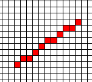
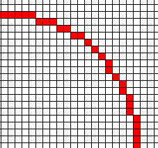

We want to draw a line from (0,0) to (x1,y1), where 0<=y1<=x1, by setting one pixel per column. For example, if x=10, y=7, we get this:

Here are several versions, ending with Bresenham's algorithm. The point of this is to use the simplest possible operations.
m=y1/x1;
pixel(0,0);
for(x=1;x<=x1;x++)
{ y=round(m*x);
pixel(x,y);
}
m=y1/x1;
d=0;
pixel(0,0);
y=0;
for(x=1;x<=x1;x++)
{ d+= m;
if (d>= 1/2)
{ d -= 1;
y++; }
pixel(x,y);
}
m=2*y1;
d=0;
pixel(0,0);
y=0;
for(x=1;x<=x1;x++)
{ d+= m;
if (d>=x1)
{ d-= 2*x1;
y++;}
pixel(x,y);
}
m=2*y1;
d= -x1;
pixel(0,0);
y=0;
for(x=1;x<=x1;x++)
{ d+= m;
if (d>=0)
{ d-= 2*x1;
y++;}
pixel(x,y);
}
m=2*y1;
d= -x1;
*fb=1;
y=0;
for(x=1;x<=x1;x++)
{ d+= m;
if (d>=0)
{ d-= 2*x1;
y++;}
*(fb+x*maxy+y)=1;
}
m=2*y1;
d= -x1;
p=fb;
*p=1;
for(x=1;x<=x1;x++)
{ d+= m;
p+=maxy;
if (d>=0)
{ d-= 2*x1;
p++;}
*p=1;
}
Mask is all ones when d>=0, all zeroes otherwise.
We also pulled 2*x1 out of the loop.
m=2*y1;
d= -x1;
p=fb;
*p=1;
doublex1= x1<1; for(x="1;x<=x1;x++)" { d+="m;" p+="maxy;" mask="(~(d">>31));
d -= (doublex1&mask);
p += (1&mask);
*p=1;
}
This is all and well for lines originating at (0,0) but what
about real lines. Here is an implementation of Bresenhams that
works for slopes in the range 0 < m < 1:
{
int xa = 10, ya = 7, xb = 200, yb = 150;
int dx = abs(xa - xb), dy = abs(ya - yb);
int p = 2 * dy - dx;
int twoDy = 2 * dy, twoDyDx = 2 * (dy - dx);
int x, y, xEnd;
if (xa > xb) {
x = xb;
y = yb;
xEnd = xa;
}
else {
x = xa;
y = ya;
xEnd = xb;
}
cgw->DrawPoint(x,y);
while (x < xEnd) {
x++;
if (p < 0)
p += twoDy;
else {
y++;
p += twoDyDx;
}
cgw->DrawPoint(x,y);
}
}
Here is a formula to calculate the points on a acircle.
y = yc(+/-)sqrt(r^2 - (xc - x)^2)
This is of course a very complex formula and not something we
would use.
.

y(x) = 1 - (1/2) x2 - (1/8) x4 - (1/16) x6 - (5/128) x8 - (7/256) x10 - (21/1024) x 12+ ...
This is popular but usually the wrong way.
z = x- 0.3536
y(z) = ( 0.9353967287- 0.3780214203 z- 0.6109173568 z2 - 0.2468897312 z3 - 0.2992736736 z4 - 0.2821915805 z5 - 0.3420828869 z6 - 0.4015387039 z7 - 0.5080487872 z8 - 0.6481416197 z9 - 0.8517407025 z10 - 1.133286086 z11 - 1.531581071 z12 - 2.091410948 z13+...
The error at x=.71 is 0.000 004. This is better, but there are more nonzero coefficients, which means that it is slower.
y(x) = + 1.000000093 - 0.00002511816061 x - 0.4988901592 x2 - 0.01882886918 x3 + 0.03498610076 x4 - 0.7655182976 x5 + 2.101697099 x6 - 3.603814683 x7 + 3.259950635 x8 - 1.315059748 x9
This has a max error of 1.5*10-7, which is much better than above, expecially as there are only 8 coefficients. We could get as good as either Taylor with many fewer terms than they.
| cos t | sin t |
| - sin t | cos t |
approximately =
| 1 | t |
| t | 1 |
with everything multiplied by R. But this circle may grow since the determinant >1.
| 1 | t |
| t | 1-t2 |
What should Dt be?
Unfortunately, the speed of the curve wrt t varies with t, so the stepsize must also.
pixel(0,r);
for(x=1;x<r/sqrt(2);x++)
{ y=sqrt(r2-x2);
pixel(x,y);
}
y=r;
pixel(0,r);
for(x=1;x<r/sqrt(2);x++)
{ d=x2+(y-1/2)2-r2;
if (d>=0) y--;
pixel(x,y);
}
y=r;
d= -r;
pixel(0,r);
for(x=1;x<r/sqrt(2);x++)
{ d+= 2x-1;
if (d>=0)
{ y--;
d -= 2y; /* Must do this AFTER y-- */
}
pixel(x,y);
}
This is Bresenham's circle algorithm. Note that you can store 2x-1 and -2y and update them by adding or subtracting 2.
y=r;
d= -r;
x2m1= -1;
pixel(0,r);
for(x=1;x<r/sqrt(2);x++)
{ x2m1 += 2;
d+= x2m1;
if (d>=0)
{ y--;
d -= (y<<1); /* Must do this AFTER y-- */ } pixel(x,y); }
void circlePlotPoints(CGWindow *cgw, int xCenter, int yCenter, int x, int y)
{
cgw->DrawPoint(xCenter + x, yCenter + y);
cgw->DrawPoint(xCenter - x, yCenter + y);
cgw->DrawPoint(xCenter + x, yCenter - y);
cgw->DrawPoint(xCenter - x, yCenter - y);
cgw->DrawPoint(xCenter + y, yCenter + x);
cgw->DrawPoint(xCenter - y, yCenter + x);
cgw->DrawPoint(xCenter + y, yCenter - x);
cgw->DrawPoint(xCenter - y, yCenter - x);
}
void circleMidPoint(CGWindow *cgw, void *arg)
{
int xCenter = 100, yCenter = 100, radius = 50;
int x = 0;
int y = radius;
int p = 1 - radius;
cgw->SetColor(0, RGB_RANGE, 0);
circlePlotPoints(cgw, xCenter, yCenter, x, y);
while (x < y) {
x++;
if (p < 0)
p += 2 * x + 1;
else {
y--;
p += 2 * (x - y) + 1;
}
circlePlotPoints(cgw, xCenter, yCenter, x, y);
}
}
Here are two filling algorithms, since each handles things the other doesn't.
The input is a polygon defined by a list of vertices and edges. Hearn & Baker describe this in section 3.11 on page 117, altho they goes into more detail than we need.
If a scan line goes exactly thru a vertex, then pretend that it really goes slightly below. The effect is that the code to test whether a scan line crosses an edge is thus:
if yscan<= yhi and ylo
The input is a region defined by setting the pixels around the border. You mark one inside pixel, then the color spreads like a fire. More general regions can be filled. Hearn & Baker mention this on page 127.
The inside must be connected, else only one component is filled. This is harder than you'd think. If the polygon is thin, then the inside may not be connected, so the color stops too soon. This figure shows a long thin triangle, zoomed, and filled with green by touching a point in the center and flooding. Note that two red regions are missed.
Polygon Not Properly Filled
Previous Class, Next Class, ECSE-4750 Fall 1999 Home Page
Copyright © 1998-9, Wm. Randolph Franklin. You may use my material for non-profit education and research, provided that you acknowledge me and preserve this notice.